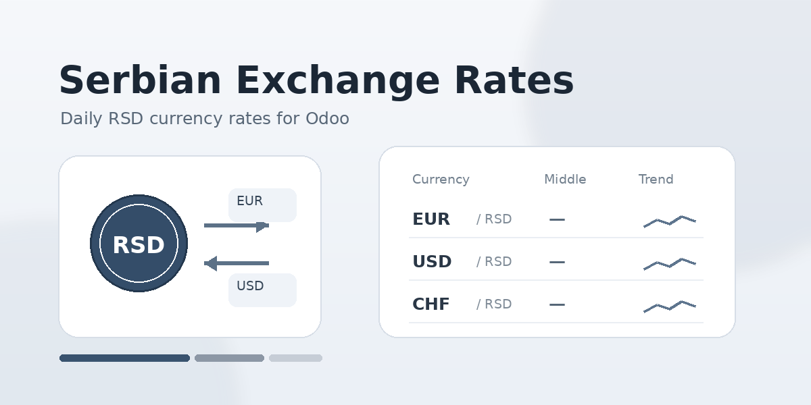
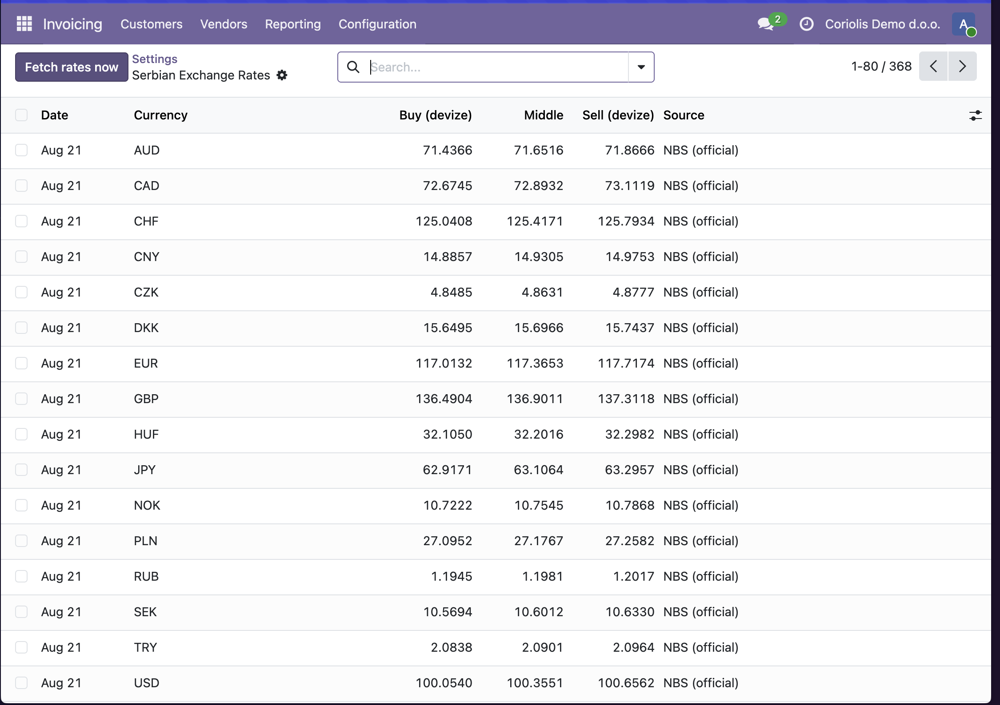
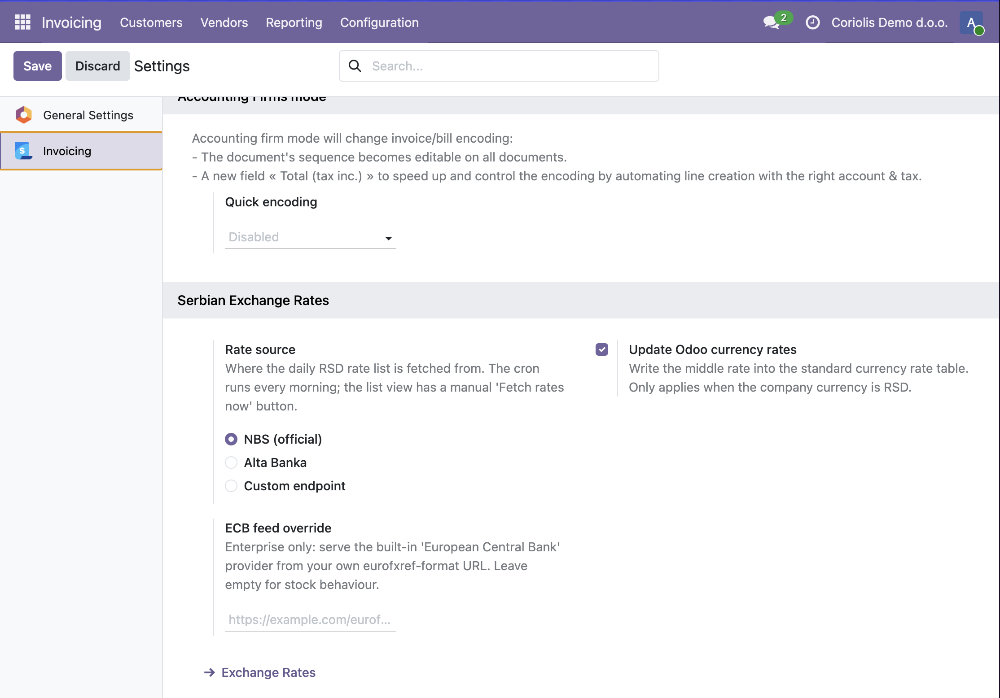
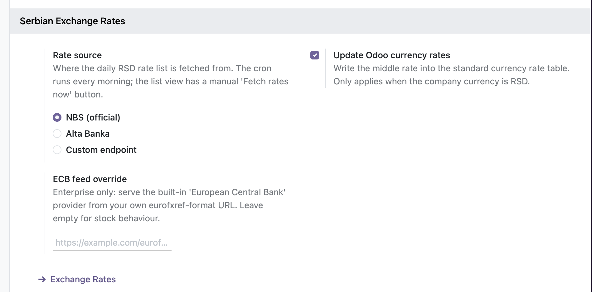

Daily RSD exchange rates: official NBS list by default, commercial bank lists optional
res.currency.rate — the table Odoo itself uses
everywhere — so multicurrency invoicing, vendor bills,
pricelists, eCommerce and reporting convert at the official rate
with nothing else to set up. Designed for companies with
RSD as base currency.
Supported out of the box. An EUR customer invoice, a USD vendor bill or a foreign-currency pricelist converts at the NBS rate published for that document's date. Two things to know: Odoo stores a single rate per currency per day, so conversion always uses the NBS middle rate (bank buy/sell spreads stay in this module's own table, for reference); and Odoo's built-in Automatic Currency Rates is an Enterprise feature, so on Community this module is what keeps your rates current instead of manual entry.

rs_fx.rate_source = nbs | alta | custom — choose
the daily source.rs_fx.custom_url — endpoint URL when the source
is custom.rs_fx.update_currency_rates = 0 — keep the rates
in their own table without touching res.currency.rate.rs_fx.ecb_url — redirect the stock ECB provider
of Automatic Currency Rates to a self-hosted ECB-format feed.
This module retrieves publicly published exchange rates over HTTPS from a public mirror of the National Bank of Serbia rate list (kurs.resenje.org) and, when selected as source, from altabanka.rs (Alta Banka a.d. Beograd) or a custom endpoint you configure. No customer data is collected or transmitted — requests contain nothing but the date of the requested rate list.
Support: odoo@coriol.co. Free software distributed under LGPL-3.